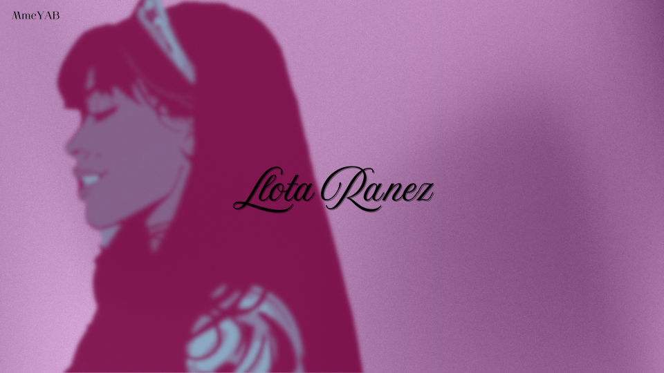

Llota Ranez
Jeu de rôle sur serveur FiveM
Originaire d'un quartier pauvre de La Havane, Llota Ranez grandit dans un foyer toxique avant de trouver refuge auprès de Tata Blanca dans un orphelinat local. Devenue éducatrice pour protéger les plus jeunes, sa vie bascule lorsqu'un gang s'en prend au foyer. Par vengeance et justice, elle commet l'irréparable avant de fuir vers Los Santos. Désormais guidée par la volonté d'envoyer chaque mois du soutien financier à Tata Blanca, Llota reste une femme résiliente et altruiste, mais marquée par un lourd traumatisme et une impulsive témérité.